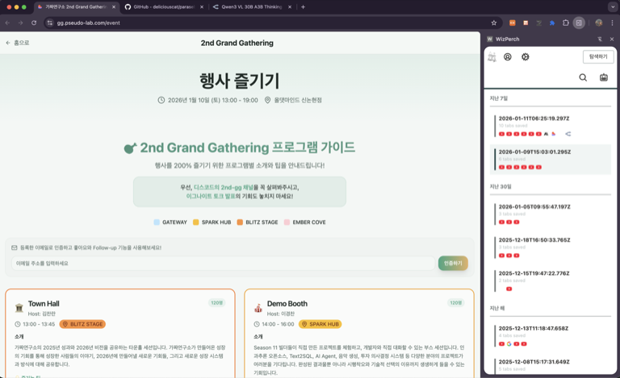

프로젝트 소개: WizPerch - Chrome Extention 기반 SNS engine
WizPerch 프로젝트
문제의식
개인적으로 인터넷 환경에서의 toxic한 의사소통 경험, 필터버블, 컨텐츠의 플랫폼 종속성 등에 문제의식을 가지고 있습니다. 소셜미디어 구축 엔진을 오픈소스화하여 서비스 운영자가 추천 시스템 운영권을 가질 수 있도록 하는 것을 목표로 합니다. (Semi-Decentralization)
프로젝트로 다음과 같은 방법으로 이 문제를 해결해보고자 했습니다.
- Chrome Extention 형태의 온라인 커뮤니티를 만들어 컨텐츠 생산자가 ownership을 가질 수 있게 한다.
- Agentic AI + Knowledge Tracing 기반의 웹페이지 추천으로 motivated reasoning(본인의 기존 입장에 맞는 근거자료를 편취하게 되는 것)을 막는다.
- 누구나 추천 Agent 설계를 쉽게 할 수 있도록 극도로 추상화된 프레임워크를 만든다.
사용자 유입을 위한 utility 기능
위의 개발 동기는 사용자 관점이 아니기 때문에, 시너지가 있는 다른 기능으로 유저를 끌어모으고자 합니다.
- 탭 저장하기: PC 사용을 종료하고, 다음 날 이어서 보던 페이지를 보기 위해 현재 열려있는 탭을 저장하는 기능
- Agentic Search: 사이드패널에서 검색을 하는 것이 Google, Naver 등의 포털을 열어 사용하는 것 보다 자연스러운 조작임
- AI와 대화하기: 웹페이지 기반 질의응답. 진부한 기능이지만 구현이 쉽고 UI 상 공간이 남아 넣어봄. 웹 컨텐츠 + SLM 조합으로도 충분한 만족감을 느낄 유저도 있을 듯(요약, 번역 등)
기술 스택
- Vue.js
Frontend. 적절히 추상화되었으면서도 Coding AI가 충분한 지식을 가짐. - FastAPI
AI Agent Backend. 익숙한 Python 기반, 우수한 비동기 처리, Agent 관련 라이브러리 발전 가능성 높음. - Convex
Backend as a Service. Trivial한 기능 이상으로 구현할 수요가 없기에 잘 만들어진 DB를 채용함. - Clerk
Auth 관련 기능을 제공하는 서비스. 마찬가지로 핵심기능이 아닌 것은 외재화함.
관련 레포지토리
WizPerch
이 프로젝트의 Chrome Extention 프론트엔드 및 일부 백엔드 코드를 포함합니다.
- Side pannel 형태로 메인 웹페이지 우측에 배치됨
- Convex DB로 관리되는
저장된 탭/댓글/유저정보 - Clerk 사용한 소셜로그인
- 현재 작업 상황: 전체 프레임과 로그인/댓글 기능, 그리고 킬러기능인 ‘탭 저장하기’ 기능 작동됨
- ToDo: AI pipeline 서버와 통신하여 web recommend 기능 구현

여기서 탭 저장하기를 누르면 보관된 탭으로 이동하며, 지금 열려있는 탭이 저장됩니다. (직접 우상단의 버튼을 눌러서도 접근 가능)
웹페이지에 댓글을 남길 수 있어 관심사가 비슷한 사람끼리 소통 가능합니다.

보관된 탭 메뉴는 위와 같이 날짜 인덱싱과 favicon이 표시됩니다. 클릭하면 그 날 저장한 탭이 켜집니다. (일단 저 자신이 실사용을 하죠?)
parasel
저는 ‘LangChain이 AI agent 개발을 위한 표준이 될만한 자격이 있는가?‘에 대해 부정적입니다. 플랫폼 종속성이 낮은 PydanticAI가 더 나은 선택이라고 생각하며, 이것을 FastAPI와 함께 wrapping하여 저의 use-case에 맞는 프레임워크를 직접 만들었습니다.
모든 use-case에 대응하는 프레임워크는 아니며, 상황에 맞는 프레임워크를 때에 맞춰 개발해 사용하는 것이 Vibe Coding 시대에 적합한 개발 프로세스라고 봅니다.
- 극도로 추상화된 프레임워크로, coding agent와의 협업 시 context를 상당히 아낄 수 있음.
- task를 module의 직렬-병렬 연결로 정의할 수 있다. 중첩 리스트 형태로 task를 정의.
- 다양한 task를 담당하는 여러 Agent를 Monolithic하게 배포할 수 있음.
- FastAPI 서버 배포를 위한 boilerplate를 built-in함. 추가 작성 필요 x
- ToDo:
Serial/Parallel클래스에 api로 노출되는 값을 지정하는.expose()메서드 추가.
WizPerch-ai-pipeline
parasel 라이브러리를 활용하여 구축된 서버의 예시입니다.
- 직접 사용하며 필요하다고 느끼는 feature들을 parasel에 추가하는 중
- 현재 작업 상황:
web recommend에이전트 작동 확인됨 - ToDo: 1) parasel에 추가할
.expose()메서드로 출력값 가독성/보안성 개선. 2) AI와 대화하기 기능 추가하여 다중 태스크 모놀리식 배포, 다중 스레드 비동기 처리가 되는지 확인.
개발 간 AI 사용 노하우
- 프론트엔드는 Naïve Coding 방법론으로 개발했습니다.
- AI Agent 백엔드는 고수준 프레임워크를 Vibe Coding한 후 이를 이용해 전통적인 방식의 프로그래밍을 합니다.
- 프로젝트 구조와 디자인 패턴을 Code Agent에게 명시적으로 input하는 방법을 즐겨 사용합니다. 이 블로그에 관련한 스터디 내용을 꾸준히 업로드 할 예정.